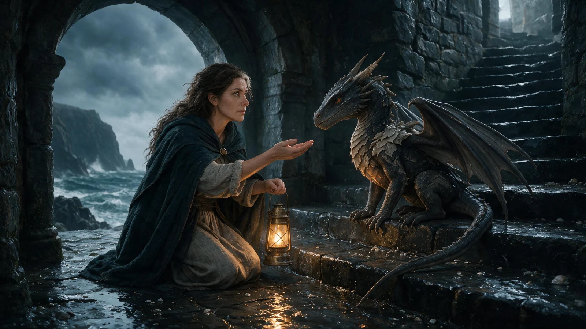

От мира книги
к первому шагу читателя
«Соль мёртвых богов» — концепт запуска тёмного фэнтези. Мы собрали обложку, героев, фрагмент и иллюстрированный тизер в одну историю, которую можно исследовать.

Подход к проекту
Дать истории
узнаваемый образ
Читателю нужно почувствовать жанр и увидеть конфликт до того, как он откроет фрагмент. Для профессиональной аудитории важен отдельный короткий путь к описанию книги и контакту.
Холодное море.
Живой огонь
В основе — морская готика: глубокие сине-зелёные тени, светлая кость, мокрый базальт и янтарный свет. Сдержанная типографика Prata и Manrope даёт иллюстрациям пространство. Золотое название связывает обложку с акцентами сайта.
Один конфликт
в разных масштабах
Первый экран задаёт вопрос о свете и выборе. Аннотация раскрывает завязку. Карточки героев показывают разные стороны конфликта. Фрагмент даёт услышать голос истории, а CTA предлагают конкретное следующее действие.
Мир, который
можно исследовать
Утверждённая смотрительница повторяется на обложке и в ключевых сценах. Маленький дракон связывает историю с тизером. Три локации переключаются в атласе, а светлый блок чтения меняет ритм страницы перед знакомством с автором.
Каждый интерес
получает продолжение
| Интерес | Путь | Следующий шаг |
|---|---|---|
| Хочу прочитать | Первый экран → история → фрагмент | Единый режим чтения |
| Хочу увидеть мир | Тизер → герои → атлас | Три локации и начало книги |
| Хочу книгу | Фрагмент → выбор издания | Электронная версия или печатный предзаказ |
| Хочу сотрудничать | Автор → материалы → тема предложения | Письмо команде WOLFART |
| Хочу такой проект | Студийный блок → кейс | Обсуждение своей книги |
Это демонстрационный проект: книга и автор вымышлены. Коммерческие сценарии показаны без оплаты и сбора данных. Результаты продаж и конверсии не заявляются.
Образ. Слова.
Путь читателя
Обложка и иллюстрации · Художественное направление · Аннотация и тексты страницы · Контентная структура · Иллюстрированный тизер · Адаптивный лендинг · Подготовка к публикации.
Иллюстрации подготовлены с использованием генеративных инструментов и отобраны для единой визуальной серии. Портрет вымышленного автора создан для концепта. Шрифты Prata и Manrope распространяются по лицензии SIL OFL.